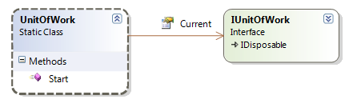

Introduction
Martin Fowler writes:
"When you're pulling data in and out of a database, it's important to keep
track of what you've changed; otherwise, that data won't be written back into
the database. Similarly you have to insert new objects you create and remove any
objects you delete."
and
"A Unit of Work keeps track of everything you do during a
business transaction that can affect the database. When you're done, it
figures out everything that needs to be done to alter the database as a result
of your work."
In NHibernate we have the Session object which is a Unit of
Work (UoW) container. The session object keeps track of all objects you load,
new objects you add, existing objects you delete and changes you make to any of
these objects. Only when flushing the session will the database
be altered (that is: will the necessary create, update and delete statements be
sent to the database).
Now, working directly with the NHibernate session object makes absolute
sense. But some times you rather want to abstract the data manipulation
interface from a specific infrastructure implementation à la NHibernate.
Note: most of the design ideas and implementation details
presented here originate from Ayende's
UnitOfWork implemented in the Rhino.Commons which you can get
here.
Design and Implementation (TDD)
Some thought about TDD
I want to implement a UnitOfWork pattern for NHibernate and I want to do it
by using TDD.
For a beginner (like I was myself not so long ago) it seems unnatural at the
beginning. We introduce a huge overhead you might think. You might also think
that we have to write at least double the code as when doing the development
without TDD. But wait until you have to start to debug your application... or
until the customer wants to have something changed in the application... or
until you have to re-factor you application... Then you will immediately see and
feel the benefits of a good test coverage.
Attention: Multi-Threading ahead
Please not that the implementation presented here is strictly
NOT thread safe!!! I want to reduce the complexity of this
first implementation. But I promise that in a following post
I'll show you how to make the implementation of the unit of work pattern thread
safe and thus useful for e.g. Web scenarios.
The UnitOfWork Class
To start with: I want to have an easy way to start a new
UoW, in any place of my application have access to the current
UoW and commit the business transaction represented by
my UoW. We can do this with a static class called UnitOfWork

The method start creates and returns an instance of a
UnitOfWorkImplementor class which implements the interface
IUnitOfWork. As you can see then interface IUnitOfWork inherits
from IDisposable. So we can define that the business transaction is
ended when the UoW is disposed. Now, if we do nothing else then nothing should
happen, that is no changes should be propagated to the database. To commit a
business transaction we have to explicitly call a method of the UoW.
Let's call this method TransactionalFlush. In doing so all
changes recorded by the UoW are committed to the database in one go.
Now let's start to implement this! We are doing TDD, aren't we? So we will
write our first test (if you are not sure how to best setup a new solution for
TDD please consult this
post). I define a new solution with two projects as follows

Add a class UnitOfWork_Fixture.cs to the test project and implement the first
test like this
[TestFixture]
public class UnitOfWork_Fixture
{
private readonly MockRepository _mocks = new MockRepository();
[Test]
public void Can_Start_UnitOfWork()
{
IUnitOfWork uow = UnitOfWork.Start();
}
}
Of course this test will not compile since you don't have the types
UnitOfWork and IUnitOfWork defined yet. Let Resharper create them for you (or
implement them by hand)
public static class UnitOfWork
{
public static IUnitOfWork Start()
{
throw new NotImplementedException();
}
public static IUnitOfWork Current { get; private set; }
}
public interface IUnitOfWork : IDisposable
{
}
Now the test will compile but it will fail! Of course, you haven't
implemented the Start method so far. In this method we must now create a new UoW
and return it to the caller. A UoW is a complex beast and should therefore be
constructed in a factory. So let's define a factory Interface IUnitOfWorkFactory
with a method Create which returns a UoW implementing the interface
IUnitOfWork.
public interface IUnitOfWorkFactory
{
IUnitOfWork Create();
}
since we want to test our UnitOfWork class in isolation we have to mock all
other dependencies line the unit of work factory. I'll use
Rhino.Mocks as my mocking framework (Please refer to
documentation here). I
want to test that when calling the start method of the UnitOfWork class the
factory gets called. So I extend my test function
[Test]
public void Can_Start_UnitOfWork()
{
var factory = _mocks.DynamicMock<IUnitOfWorkFactory>();
var unitOfWork = _mocks.DynamicMock<IUnitOfWork>();
// brute force attack to set my own factory via reflection
var fieldInfo = typeof(UnitOfWork).GetField("_unitOfWorkFactory",
BindingFlags.Static | BindingFlags.SetField | BindingFlags.NonPublic);
fieldInfo.SetValue(null, factory);
using(_mocks.Record())
{
Expect.Call(factory.Create()).Return(unitOfWork);
}
using(_mocks.Playback())
{
var uow = UnitOfWork.Start();
}
}
In the first two lines of code I mock the external dependencies of the
UnitOfWork class. Then I do something you should not do very often (but I have
good reasons doing so here and I promise it's the only time I'll do it in this
project...). I set a private field of the UnitOfWork class with a value by using
reflection. I could implement a public setter in the class but as I would only
need it for this test and I want to keep the class interface as simple as
possible I chose to do it via reflection.
In the record phase I define my expectation (namely that the factory create
method is called) and in the playback phase I invoke the Start method which I
want to test. The test will compile but fail to execute. I have not yet defined
the private static field _unitOfWorkFactory and I also do not call the factory.
So let's modify our code...
public static class UnitOfWork
{
private static IUnitOfWorkFactory _unitOfWorkFactory;
private static IUnitOfWork _innerUnitOfWork;
public static IUnitOfWork Start()
{
_innerUnitOfWork = _unitOfWorkFactory.Create();
return _innerUnitOfWork;
}
public static IUnitOfWork Current { get; private set; }
}
now the test will pass.
Since in all our test regarding the UnitOfWork class we will always need it
with an injected factory we define a new test fixture with a context setup for
our specific needs. We put the respective code in the
SetupContext and TearDownContext methods
[TestFixture]
public class UnitOfWork_With_Factory_Fixture
{
private readonly MockRepository _mocks = new MockRepository();
private IUnitOfWorkFactory _factory;
private IUnitOfWork _unitOfWork;
[SetUp]
public void SetupContext()
{
_factory = _mocks.DynamicMock<IUnitOfWorkFactory>();
_unitOfWork = _mocks.DynamicMock<IUnitOfWork>();
// brute force attack to set my own factory via reflection
var fieldInfo = typeof(UnitOfWork).GetField("_unitOfWorkFactory",
BindingFlags.Static | BindingFlags.SetField | BindingFlags.NonPublic);
fieldInfo.SetValue(null, _factory);
_mocks.BackToRecordAll();
SetupResult.For(_factory.Create()).Return(_unitOfWork);
_mocks.ReplayAll();
}
[TearDown]
public void TearDownContext()
{
_mocks.VerifyAll();
}
}
Note: in the second last line of the
SetupContext method we define that each time the method Create
of the factory object is called (by the UnitOfWork Start method) we want it to
return our predefined mocked _unitOfWork instance.
Trying to start a UoW if there is already one active should throw a
meaningful exception. This is the test
[Test]
public void Starting_UnitOfWork_if_already_started_throws()
{
UnitOfWork.Start();
try
{
UnitOfWork.Start();
}
catch (InvalidOperationException ex)
{ }
}
As a consequence we have to extend our Start method in the UnitOfWork
class
public static IUnitOfWork Start()
{
if (_innerUnitOfWork != null)
throw new InvalidOperationException("You cannot start more than one unit of work at the same time.");
_innerUnitOfWork = _unitOfWorkFactory.Create();
return _innerUnitOfWork;
}
Now I have another problem: After the test is finished the static field
_innerUnitOfWork of my UnitOfWork class is set
to a value other than null. This will have a undesired side
effect to the following test. I have to reset this field. Again in this special
case I'll do it via reflection to not clutter the interface of my class (static
classes are difficult more complex to deal with in TDD than non static
classes...). We do reset our UnitOfWork class in the TearDownContext method
[TearDown]
public void TearDownContext()
{
_mocks.VerifyAll();
// assert that the UnitOfWork is reset
var fieldInfo = typeof(UnitOfWork).GetField("_innerUnitOfWork",
BindingFlags.Static | BindingFlags.SetField | BindingFlags.NonPublic);
fieldInfo.SetValue(null, null);
}
Next we want to be able to access the current unit of work. As usual we first
implement a test
[Test]
public void Can_access_current_unit_of_work()
{
IUnitOfWork uow = UnitOfWork.Start();
var current = UnitOfWork.Current;
Assert.AreSame(uow, current);
}
You can figure out what code you need to implement for the test to pass.
We also want to assert that when accessing the current UoW if no UoW has been
started that a meaningful exception is thrown
[Test]
public void Accessing_Current_UnitOfWork_if_not_started_throws()
{
try
{
var current = UnitOfWork.Current;
}
catch (InvalidOperationException ex)
{ }
}
now my implementation of the Current property in the UnitOfWork class is as
follows
public static IUnitOfWork Current
{
get
{
if (_innerUnitOfWork == null)
throw new InvalidOperationException("You are not in a unit of work.");
return _innerUnitOfWork;
}
}
Next we want a property on the class which tells us whether a UoW is started
or not. The test for it
[Test]
public void Can_test_if_UnitOfWork_Is_Started()
{
Assert.IsFalse(UnitOfWork.IsStarted);
IUnitOfWork uow = UnitOfWork.Start();
Assert.IsTrue(UnitOfWork.IsStarted);
}
It's getting boring isn't it... But this is the way TDD
works. You always think (hard) on what you need and then you implement the test
with which you can proof that you get it as you want it. Only then you implement
the functionality needed to fulfill the test. If you do so you automatically
follow the YAGNI principle (you ain't gona need it) that is you
only implement the code you really need!
We can fulfill the test like so
public static bool IsStarted
{
get { return _innerUnitOfWork != null; }
}
The UnitOfWork class is now a perfect wrapper for the NHibernate session
object. Though for some advance scenarios I would like to have access to the
session object related to my UoW. As a consequence I'll implement a read only
property CurrentSession in the UnitOfWork class. Lets again start with the
test
[Test]
public void Can_get_valid_current_session_if_UoW_is_started()
{
using (UnitOfWork.Start())
{
ISession session = UnitOfWork.CurrentSession;
Assert.IsNotNull(session);
}
}
and the implementation
public static ISession CurrentSession
{
get { return _unitOfWorkFactory.CurrentSession; }
internal set { _unitOfWorkFactory.CurrentSession = value; }
}
Note that I have just delegated the call to the factory class. Thus to make
the test pass I have to add two additional lines to the SetupContext method of
the test fixture where I mock a session object and setup the result for a call
to the property CurrentSession of the factory.
[SetUp]
public void SetupContext()
{
_factory = _mocks.DynamicMock<IUnitOfWorkFactory>();
_unitOfWork = _mocks.DynamicMock<IUnitOfWork>();
_session = _mocks.DynamicMock<ISession>();
// brute force attack to set my own factory via reflection
var fieldInfo = typeof(UnitOfWork).GetField("_unitOfWorkFactory",
BindingFlags.Static | BindingFlags.SetField | BindingFlags.NonPublic);
fieldInfo.SetValue(null, _factory);
_mocks.BackToRecordAll();
SetupResult.For(_factory.Create()).Return(_unitOfWork);
SetupResult.For(_factory.CurrentSession).Return(_session);
_mocks.ReplayAll();
}
That's all we need for the moment regarding the UnitOfWork class. Next topics
will be the the implementation of the UnitOfWorkFactory class and then of the
UnitOfWorkImplementor class. The details will be presented in the next post to
this blog. So keep ready...
Part 2
Design and Implementation
The Unit Of Work Factory
The creation of a unit of work instance is a complex process and as such is a
good candidate for a factory.
Since a UoW (Unit of Work) is basically a wrapper around a NHibernate session
object I'll need to open such a session whenever I start a new UoW. But to be
able to get such a session NHibernate has to be configured and a NHibernate
Session Factory has to be available. The interface of my UoW factory is defined
as follows

I basically have two public methods on my factory. One for the creation of
the UoW and the second for the disposal of a specific UoW instance. The disposal
involves also some work and thus justifies the existence of this second factory
method. The 3 properties Configuration,
SessionFactory and CurrentSession are there
mostly for advanced scenarios (and as such could theoretically be omitted in a
first simple implementation).
Let's now write the test for the Create method of the UoW factory
implementation. At first I prepare a new test fixture class
using System;
using NHibernate;
using NUnit.Framework;
namespace NHibernateUnitOfWork.Tests
{
[TestFixture]
public class UnitOfWorkFactory_Fixture
{
private IUnitOfWorkFactory _factory;
[SetUp]
public void SetupContext()
{
_factory = (IUnitOfWorkFactory) Activator.CreateInstance(typeof (UnitOfWorkFactory), true);
}
}
}
Why the heck do I need the Activator.CreateInstance to get
an instance of the factory? Well I decided that the construction of a new
factory instance should be internal to the assembly implementing the Unit of
Work pattern. Thus the (default) constructor of the
UnitOfWorkFactory class has a modifier
internal and as a consequence cannot be used from code outside
the assembly in which the factory is implemented. But I need an instance when
testing and thus have to resort to the technique used above.
Now the question is: "what confirms me that the method Create of the factory
works as expected?". I have chosen the following: I expect
- the method returning a non null instance of type
IUnitOfWork
- the returned instance having a non null (NHibernate)
session
- the (NHibernate) session having the Flush Mode set to
commit (that is: the session is never flushed except when I
explicitly commit a transaction - see the NHibernate documentation for any details
about the Flush Mode)
Now the code
[Test]
public void Can_create_unit_of_work()
{
IUnitOfWork implementor = _factory.Create();
Assert.IsNotNull(implementor);
Assert.IsNotNull(_factory.CurrentSession);
Assert.AreEqual(FlushMode.Commit, _factory.CurrentSession.FlushMode);
}
and the implementation
public class UnitOfWorkFactory : IUnitOfWorkFactory
{
private static ISession _currentSession;
private ISessionFactory _sessionFactory;
internal UnitOfWorkFactory()
{ }
public IUnitOfWork Create()
{
ISession session = CreateSession();
session.FlushMode = FlushMode.Commit;
_currentSession = session;
return new UnitOfWorkImplementor(this, session);
}
}
As you can see I first need a new session instance. I then set the flush mode
to commit and assign the session to an instance variable for further use.
Finally I return a new instance of the UnitOfWorkImplementor
(which implements the interface IUnitOfWork). The constructor of the
UnitOfWorkImplementor class requires two parameters, the
session and a reference to this factory.
To be able to compile I also have to define the
UnitOfWorkImplementor class. Of this class I just implement the
minimum needed so far
public class UnitOfWorkImplementor : IUnitOfWork
{
private readonly IUnitOfWorkFactory _factory;
private readonly ISession _session;
public UnitOfWorkImplementor(IUnitOfWorkFactory factory, ISession session)
{
_factory = factory;
_session = session;
}
}
Now back to the implementation of the CreateSession method.
To be able to create (and open) a session NHibernate must have been configured
previously. So I solve this problem first.
First we add a file hibernate.cfg.xml to our test project
and put the following content into it (don't forget to set the property 'Copy to
Output Directory' of this file to 'Copy always').
<?xml version="1.0" encoding="utf-8" ?>
<hibernate-configuration xmlns="urn:nhibernate-configuration-2.2">
<session-factory>
<property name="connection.provider">NHibernate.Connection.DriverConnectionProvider</property>
<property name="dialect">NHibernate.Dialect.MsSql2005Dialect</property>
<property name="connection.driver_class">NHibernate.Driver.SqlClientDriver</property>
<property name="connection.connection_string">Server=(local);Database=Test;Integrated Security=SSPI;</property>
<property name="show_sql">true</property>
</session-factory>
</hibernate-configuration>
The above configuration file assumes that you have an SQL Server
2005 installed on your local machine and that you are using
integrated security to authenticate and authorize the access to
the database. It further assumes that there exists a database called
'Test' on this server. To configure NHibernate for other types
of databases please consult the online documentation here.
Now we define this test method
[Test]
public void Can_configure_NHibernate()
{
var configuration = _factory.Configuration;
Assert.IsNotNull(configuration);
Assert.AreEqual("NHibernate.Connection.DriverConnectionProvider",
configuration.Properties["connection.provider"]);
Assert.AreEqual("NHibernate.Dialect.MsSql2005Dialect",
configuration.Properties["dialect"]);
Assert.AreEqual("NHibernate.Driver.SqlClientDriver",
configuration.Properties["connection.driver_class"]);
Assert.AreEqual("Server=(local);Database=Test;Integrated Security=SSPI;",
configuration.Properties["connection.connection_string"]);
}
Here we test whether we can successfully create a configuration and whether
this configuration contains the attributes we have defined via the NHibernate
configuration file.
To fulfill this test we can e.g. implement the following code
public Configuration Configuration
{
get
{
if (_configuration == null)
{
_configuration = new Configuration();
string hibernateConfig = Default_HibernateConfig;
//if not rooted, assume path from base directory
if (Path.IsPathRooted(hibernateConfig) == false)
hibernateConfig = Path.Combine(AppDomain.CurrentDomain.BaseDirectory, hibernateConfig);
if (File.Exists(hibernateConfig))
_configuration.Configure(new XmlTextReader(hibernateConfig));
}
return _configuration;
}
}
Note that I have defined a class variable _configuration
such as that I only execute the configuration logic once during the
life time of the application. Note further that in this implementation I assume
that the configuration of NHibernate is defined via the
hibernate.cfg.xml file which must be in the same directory as
the test assembly.
As soon as I have a valid configuration I can create a NHibernate session
factory. Note that this is a rather expensive operation (takes
some time depending on the number of entities you are mapping) and thus should
only be executed once during the life time of the application. The access to the
NHibernate SessionFactory is thread safe!
Let's write a test for the creation of the SessionFactory.
[Test]
public void Can_create_and_access_session_factory()
{
var sessionFactory = _factory.SessionFactory;
Assert.IsNotNull(sessionFactory);
Assert.AreEqual("NHibernate.Dialect.MsSql2005Dialect", sessionFactory.Dialect.ToString());
}
This is a rather basic test and only checks whether I can successfully create
a session factory and whether at least one of its properties is configured as I
expect it, namely the dialect used.
The implementation to fulfill the test is rather simple
public ISessionFactory SessionFactory
{
get
{
if (_sessionFactory == null)
_sessionFactory = Configuration.BuildSessionFactory();
return _sessionFactory;
}
}
I have defined a class variable _sessionFactory such that I only execute the
BuildSessionFactory method once during the life time of the application. The
session factory is created on demand, that is when first needed. At the same
time this property getter method accesses the previously defined Configuration
property which in turn triggers the configuration of NHibernate (if not already
done).
The last missing piece is the implementation of the CreateSession method
which now is trivial
private ISession CreateSession()
{
return SessionFactory.OpenSession();
}
I
want to be able to access the current (open) session via my factory. If there is
no such session open at the moment a meaningful exception should be raised. To
test this write
[Test]
public void Accessing_CurrentSession_when_no_session_open_throws()
{
try
{
var session = _factory.CurrentSession;
}
catch (InvalidOperationException)
{ }
}
and the implementation is easy
public ISession CurrentSession
{
get
{
if (_currentSession == null)
throw new InvalidOperationException("You are not in a unit of work.");
return _currentSession;
}
set { _currentSession = value; }
}
The last method to implement is the UoW disposal method. In this method I
want to reset the CurrentSession to null and then forward the call to our static
UnitOfWork class (defined in the first
part of this post series) such as that this class can also make an internal
clean-up. The implementation might look as follows
public void DisposeUnitOfWork(UnitOfWorkImplementor adapter)
{
CurrentSession = null;
UnitOfWork.DisposeUnitOfWork(adapter);
}
That's all we have to do for now regarding the UoW factory. Again we have
implemented it in a TDD way. When we later re-factor our implementation to make
it thread-safe this TDD approach will be a huge benefit since we have a complete
test coverage of out code.
The Unit of Work Implementor
This class defines an actual Unit of Work instance. It implements the already
mentioned (and defined) interface IUnitOfWork which in turn inherits from
IDisposal. This allows us to work with a UoW using the following syntax
using(UnitOfWork.Start())
{
// use Unit of Work
}
at the end of the block the Dispose method of the UoW will be called. So
let's first think of a test for the implementation of this method. Here we have
to use mocking to be able to test our SUT (system under test) in isolation. So
let me setup a test fixture first.
[TestFixture]
public class UnitOfWorkImplementor_Fixture
{
private readonly MockRepository _mocks = new MockRepository();
private IUnitOfWorkFactory _factory;
private ISession _session;
private IUnitOfWorkImplementor _uow;
[SetUp]
public void SetupContext()
{
_factory = _mocks.DynamicMock<IUnitOfWorkFactory>();
_session = _mocks.DynamicMock<ISession>();
}
}
Again I use Rhino.Mocks as my
mocking framework. My UoW instance has two external dependencies namely the
UnitOfWork factory and the NHibernate session. In the SetupContext I generate a
dynamic mock for each of them.
Now I can write my test method
[Test]
public void Can_Dispose_UnitOfWorkImplementor()
{
using(_mocks.Record())
{
Expect.Call(() => _factory.DisposeUnitOfWork(null)).IgnoreArguments();
Expect.Call(_session.Dispose);
}
using (_mocks.Playback())
{
_uow = new UnitOfWorkImplementor(_factory, _session);
_uow.Dispose();
}
}
During the recording phase I define my expectations (of what should happen
when calling the Dispose method of the UoW). First the
DisposeUnitOfWork method of the factory and second the
Dispose method of the session object should be called.
Here is the code which fulfills this test
public void Dispose()
{
_factory.DisposeUnitOfWork(this);
_session.Dispose();
}
As you can see I just forward the call to the Unit of Work factory and
dispose my internal (NHibernate) session instance as formulated in the
expectations of the test.
When working with a UoW I also have to be able to use transactions. Thus I
need a way to "play" with transactions. Let's call the corresponding methods
BeginTransaction and TransactionalFlush.
Generic Transaction
To shield the client code from all NHibernate specifics and to provide a
simple(r) interface I define a GenericTransaction class (which
implements the interface IGenericTransaction) which is just a
wrapper around the NHibernate transaction.
I think that the implementation is trivial and doesn't need any further
explanation
public interface IGenericTransaction : IDisposable
{
void Commit();
void Rollback();
}
public class GenericTransaction : IGenericTransaction
{
private readonly ITransaction _transaction;
public GenericTransaction(ITransaction transaction)
{
_transaction = transaction;
}
public void Commit()
{
_transaction.Commit();
}
public void Rollback()
{
_transaction.Rollback();
}
public void Dispose()
{
_transaction.Dispose();
}
}
just note that the IGenericTransaction inherits form
IDisposable.
With this definition of a generic transaction we can proceed to the
implementation of the BeginTransaction and
TransactionalFlush methods.
First I'll implement the BeginTransaction method. As usual I define the test
first
[Test]
public void Can_BeginTransaction()
{
using(_mocks.Record())
{
Expect.Call(_session.BeginTransaction()).Return(null);
}
using (_mocks.Playback())
{
_uow = new UnitOfWorkImplementor(_factory, _session);
var transaction = _uow.BeginTransaction();
Assert.IsNotNull(transaction);
}
}
I expect that during execution of the method under test the BeginTransaction
method of the NHibernate session is called. After calling
BeginTransaction on the UoW (in the Playback phase) I
additionally test whether I get a not-null transaction.
I also want to be able to start a transaction and define an isolation
level for the transaction. The corresponding test might look like
[Test]
public void Can_BeginTransaction_specifying_isolation_level()
{
var isolationLevel = IsolationLevel.Serializable;
using(_mocks.Record())
{
Expect.Call(_session.BeginTransaction(isolationLevel)).Return(null);
}
using (_mocks.Playback())
{
_uow = new UnitOfWorkImplementor(_factory, _session);
var transaction = _uow.BeginTransaction(isolationLevel);
Assert.IsNotNull(transaction);
}
}
To fulfill the test(s) I just have to create a new instance of a generic
transaction and pass the result of the _session.BeginTransaction call
to the constructor (that is: a NHibernate ITransaction object)
public IGenericTransaction BeginTransaction()
{
return new GenericTransaction(_session.BeginTransaction());
}
public IGenericTransaction BeginTransaction(IsolationLevel isolationLevel)
{
return new GenericTransaction(_session.BeginTransaction(isolationLevel));
}
The methods each return me an instance of type GenericTransaction which I can
use in my code and call their respective commit or rollback methods if
appropriate.
The TransactionalFlush method should flush the content of
the NHibernate session to the database wrapped inside a transaction. Let's
define the test(s) for it
[Test]
public void Can_execute_TransactionalFlush()
{
var tx = _mocks.CreateMock<ITransaction>();
var session = _mocks.DynamicMock<ISession>();
SetupResult.For(session.BeginTransaction(IsolationLevel.ReadCommitted)).Return(tx);
_uow = _mocks.PartialMock<UnitOfWorkImplementor>(_factory, _session);
using (_mocks.Record())
{
Expect.Call(tx.Commit);
Expect.Call(tx.Dispose);
}
using (_mocks.Playback())
{
_uow = new UnitOfWorkImplementor(_factory, session);
_uow.TransactionalFlush();
}
}
[Test]
public void Can_execute_TransactionalFlush_specifying_isolation_level()
{
var tx = _mocks.CreateMock<ITransaction>();
var session = _mocks.DynamicMock<ISession>();
SetupResult.For(session.BeginTransaction(IsolationLevel.Serializable)).Return(tx);
_uow = _mocks.PartialMock<UnitOfWorkImplementor>(_factory, session);
using (_mocks.Record())
{
Expect.Call(tx.Commit);
Expect.Call(tx.Dispose);
}
using (_mocks.Playback())
{
_uow.TransactionalFlush(IsolationLevel.Serializable);
}
}
and the implementation is straight forward
public void TransactionalFlush()
{
TransactionalFlush(IsolationLevel.ReadCommitted);
}
public void TransactionalFlush(IsolationLevel isolationLevel)
{
IGenericTransaction tx = BeginTransaction(isolationLevel);
try
{
//forces a flush of the current unit of work
tx.Commit();
}
catch
{
tx.Rollback();
throw;
}
finally
{
tx.Dispose();
}
}
Note that when you don't provide an explicit transaction isolation level our
implementation automatically assumes an isolation level equal to "read
commited". Note also that if the Commit of the transaction fails the transaction
is rolled back.
Important: In the case of an exception during
TransactionalFlush do not try to reuse the current unit of work
since the session is in an inconsistent state and must be
closed. Thus abandon this UoW and start a new one.
To increase the usability of the UoW instance a little bit I add the
following members (which need no further explanation)
public bool IsInActiveTransaction
{
get
{
return _session.Transaction.IsActive;
}
}
public IUnitOfWorkFactory Factory
{
get { return _factory; }
}
public ISession Session
{
get { return _session; }
}
public void Flush()
{
_session.Flush();
}
That's it! We have now a simple implementation of the Unit of Work pattern
for NHibernate. Let me provide an overall picture of our implementation

Please remember: In this current version the UoW is strictly
NOT thread-safe! But I'll show you how to make it thread-safe in the next post.
Using the Unit of Work
In the following section I'll quickly show the typical usage of the UoW. As
usual I do this via TDD. I want to demonstrate how one can define a new instance
of an entity and add it to the database. In this case the entity is a simple
Person type object.
Let us first set up a test fixture as follows
using System;
using System.Reflection;
using NHibernate.Tool.hbm2ddl;
using NUnit.Framework;
namespace NHibernateUnitOfWork.Tests
{
[TestFixture]
public class Test_usage_of_UnitOfWork
{
[SetUp]
public void SetupContext()
{
UnitOfWork.Configuration.AddAssembly(Assembly.GetExecutingAssembly());
new SchemaExport(UnitOfWork.Configuration).Execute(false, true, false, false);
}
}
}
In the SetupContext method I first add the current assembly
(the one in which this test is running) as a source of the schema mapping
information to the configuration of NHibernate (which I can access via our
UnitOfWork class). It is important that this call is done prior
to the creation of the SessionFactory (that is prior to using a
session).
After extending the configuration I use the SchemaExport
class of NHibernate to automatically generate the database schema for me.
But wait: up to now I have not defined any schema at all! So let's do it now.
Let's define a simple Person entity. Add a new file
Person.cs to the test project and add the following code
public class Person
{
public virtual Guid Id { get; set; }
public virtual string Name { get; set; }
public virtual DateTime Birthdate { get; set; }
}
add an XML mapping document called Person.hbm.xml to the
test project and define the following content
<?xml version="1.0" encoding="utf-8" ?>
<hibernate-mapping xmlns="urn:nhibernate-mapping-2.2"
assembly="NHibernateUnitOfWork.Tests"
namespace="NHibernateUnitOfWork.Tests">
<class name="Person">
<id name="Id">
<generator class="guid"/>
</id>
<property name="Name" not-null="true" length="50"/>
<property name="Birthdate" not-null="true"/>
</class>
</hibernate-mapping>
Don't forget to set the 'Build Action' property of this item to
'Embedded Resource'!
Now we can write a test to insert a new person instance into the
database.
[Test]
public void Can_add_a_new_instance_of_an_entity_to_the_database()
{
using(UnitOfWork.Start())
{
var person = new Person {Name = "John Doe", Birthdate = new DateTime(1915, 12, 15)};
UnitOfWork.CurrentSession.Save(person);
UnitOfWork.Current.TransactionalFlush();
}
}
When running this test the output generated by NHibernate looks similar to
this
NHibernate: INSERT INTO Person (Name, Birthdate, Id) VALUES (@p0, @p1, @p2);
@p0 = 'John Doe', @p1 = '15.12.1915 00:00:00',
@p2 = 'bb72ae4c-7d64-4c16-84dc-c0ba2c7d306b'
Summary
I have shown you a possible implementation of the Unit of
Work pattern for NHibernate. The implementation has been developed by
using TDD.
The usage of a Unit of Work pattern simplifies the data manipulation tasks and
hides the infrastructure details from the consumer of the UoW. NHibernate offers
it's own implementation of the UoW in the form of the Session object. But
NHibernate is just one of several possible ORM tools. With this implementation
of the UoW pattern we have hidden most of the specifics of NHibernate an provide
a generic interface to the consumer of the UoW.
There are just two open points
- our implementation in not thread safe
- we still need to access the session object (through
UnitOfWork.CurrentSession) to read or modify our entites
The former I'll cover in the third part of this article and the latter problem can be solved by
introducing a (generic) repository.
Part 3
Introduction
In the previous two chapters
I introduced the Unit of Work pattern and developed a working version based on
NHibernate. One weak point of the shown implementation is that it is strictly
non thread safe. In NHibernate the session object
takes the role of the Unit of Work container. The session object is not thread
safe! That is a session instance may not be accessed from different threads. If
your application is running on multiple threads (typically an application
running on the server) then you have to open a new session instance for each
running thread.
In this post I want to improve the implementation of the Unit of Work pattern
such as that it is thread safe. The class which starts a new unit of work is a
static class. All static members of this class are accessible from each thread
of the application domain in which your application is running. Now fortunately
.NET provides us a mean to define pseudo static fields in a type which are local
to a single thread. That is this state is not shared between different threads.
Each thread has its own thread static state. To make a field thread static one
has to decorate it with the [ThreadStatic] attribute.
The easiest and most pragmatic approach would now be to just decorate our
_innerUnitOfWork field of the UnitOfWork class
with the [ThreadStatic] attribute. But eventually we want to keep additional
state in our Unit of Work. Thus we implement a special Data
class which is a kind of a wrapper around a Hashtable.
Container for Thread Static State
There are 2 possible scenarios I want to discuss. You either develop an
application with a web client or an application with a windows client (e.g.
WinForms).
In a web application one has the so called Http context for
each request. Multiple requests from different clients can run at the same but
each of them runs on a different thread and has it's own context. In this
situation we store the data relevant to the unit of work in the context of the
request.
In a windows client application (i.e. Smart Client Application) on the other
hand we have a single client that might run on different threads at the same
time. In this situation we "attach" the data relevant to the unit of work in so
called thread-static fields. A thread-static field is not shared between
different threads in the same application. To make a (static) field
thread-static we have to just decorate it with a [ThreadStatic]
attribute.
In our Unit of Work implementation we have the static UnitOfWork class which
contains a static field _innerUnitOfWork of type
IUnitOfWork. We now need to change this since this
kind of implementation is not thread safe. Since we might want to save other
data in a thread safe way as well (not just the current instance of the unit of
work) we choose a slightly more sophisticated solution.
Let's define a static class Local which encapsulates the
details whether we run a web- or a win-application. This class has just one
(static) read-only property Data of type ILocalData.
using System;
using System.Collections;
namespace NHibernateUnitOfWork
{
public static class Local
{
static readonly ILocalData _data = new LocalData();
public static ILocalData Data
{
get { return _data; }
}
private class LocalData : ILocalData
{
// implementation details to de defined
}
}
}
All details of our implementation are now "hidden" in the class
LocalData which we choose to be a private child class of the
Local class. We now want to be able to save into and read data
from this local container via a key, e.g.
Local.Data["some key"] = someValue;
// or
otherValue = Local.Data["other key"];
This should be in a thread safe way. Obviously the above sample client code
implies that we use some kind of dictionary to internally store our
data.
As usual we formulate our intention in a unit test which might look like
this
using System;
using NUnit.Framework;
namespace NHibernateUnitOfWork.Tests
{
[TestFixture]
public class LocalData_Fixture
{
[Test]
public void Can_store_values_in_local_data()
{
Local.Data["one"] = "This is a string";
Local.Data["two"] = 99.9m;
var person = new Person {Name = "John Doe", Birthdate = new DateTime(1991, 1, 15)};
Local.Data[1] = person;
Assert.AreEqual(3, Local.Data.Count);
Assert.AreEqual("This is a string", Local.Data["one"]);
Assert.AreEqual(99.9m, Local.Data["two"]);
Assert.AreSame(person, Local.Data[1]);
}
}
}
The test shows that I want to be able to not only store basic types but any
complex type in my local data container. In this case a string, an integer and
an instance of a Person class. The Person class is very basic at looks like
follows
public class Person
{
public virtual Guid Id { get; set; }
public virtual string Name { get; set; }
public virtual DateTime Birthdate { get; set; }
}
Please also note that I use keys of different type (string and
int).
Implementation for Smart Client Applications
Let's first assume that we want to provide a thread safe unit of work
implementation for the smart client application. Then the most basic
implementation to fulfill this test is
private class LocalData : ILocalData
{
private static Hashtable _localData = new Hashtable();
public object this[object key]
{
get { return _localData[key]; }
set { _localData[key] = value; }
}
public int Count
{
get { return _localData.Count; }
}
}
I just take a hash table as local storage and define an indexer property and
a Count property (Note: a HashTable is an often used implementation of
a Dictionary).
We want to also be able to clear the content of the local
store and thus we define the following test
[Test]
public void Can_clear_local_data()
{
Local.Data["one"] = "This is a string";
Local.Data["two"] = 99.9m;
Assert.AreEqual(2, Local.Data.Count);
Local.Data.Clear();
Assert.AreEqual(0, Local.Data.Count);
}
The code to fulfill this test is trivial, just add the code snippet below to
the LocalData class
public void Clear()
{
_localData.Clear();
}
Unfortunately the test still faults when run! This is because the local data
storage is static and all test methods access the same container we have a "side
effect" which we must now compensate. We can do it by just clearing the local
data container before each test. Add this code to the test fixture class to
compensate the side effect
[SetUp]
public void SetupContext()
{
Local.Data.Clear(); // start side-effect free!
}
Re-run all tests. They should now all pass...
And now comes the "tricky" part of the implementation where we want to
guarantee that our local data store is indeed thread safe.
Let's first define a test for this scenario
private ManualResetEvent _event;
[Test]
public void Local_data_is_thread_local()
{
Console.WriteLine("Starting in main thread {0}", Thread.CurrentThread.ManagedThreadId);
Local.Data["one"] = "This is a string";
Assert.AreEqual(1, Local.Data.Count);
_event = new ManualResetEvent(false);
var backgroundThread = new Thread(RunInOtherThread);
backgroundThread.Start();
// give the background thread some time to do its job
Thread.Sleep(100);
// we still have only one entry (in this thread)
Assert.AreEqual(1, Local.Data.Count);
Console.WriteLine("Signaling background thread from main thread {0}", Thread.CurrentThread.ManagedThreadId);
_event.Set();
backgroundThread.Join();
}
private void RunInOtherThread()
{
Console.WriteLine("Starting (background-) thread {0}", Thread.CurrentThread.ManagedThreadId);
// initially the local data must be empty for this NEW thread!
Assert.AreEqual(0, Local.Data.Count);
Local.Data["one"] = "This is another string";
Assert.AreEqual(1, Local.Data.Count);
Console.WriteLine("Waiting on (background-) thread {0}", Thread.CurrentThread.ManagedThreadId);
_event.WaitOne();
Console.WriteLine("Ending (background-) thread {0}", Thread.CurrentThread.ManagedThreadId);
}
In the above code I run two threads in parallel, the thread on which the test
is running (let's call it the main thread) and an additional
background thread. The code which is executed in the background
thread is implemented in the helper method RunInOtherThread. To
be able to synchronize the two threads I use an Event, in this
case a ManualResetEvent. I have put some
Console.WriteLine statements in the code for debugging purposes.
In the main thread I add some data to the local data store. Then I spin up
the background thread. In the background thread I first test that my (thread-)
local data store is empty and then also fill in some data. With the
Assert statements I test that we really have a thread safe
behavior.
The only change needed to make my implementation thread safe is to decorate
the static field _localData with the [ThreadStatic] attribute.
[ThreadStatic]
private static Hashtable _localData = new Hashtable();
When the test is run it should pass and produce an output similar to this

Implementation for Web
As mentioned above in this scenario we want to store our local data in the
context of the current HTTP request.
First I want to provide an indicator whether I am running in web and thus I
add the following to the code snippet to the LocalData
class
public static bool RunningInWeb
{
get { return HttpContext.Current != null; }
}
Here I use the HttpContext class of the .NET framework
(namespace System.Web). It's static property Current
is equal to null if we do not run in the context of a web application.
To abstract the details of the context (web- or smart client application) I
define a private read-only property LocalHashtable as below
private static readonly object LocalDataHashtableKey = new object();
private static Hashtable LocalHashtable
{
get
{
if (!RunningInWeb)
{
if (_localData == null)
_localData = new Hashtable();
return _localData;
}
else
{
var web_hashtable = HttpContext.Current.Items[LocalDataHashtableKey] as Hashtable;
if (web_hashtable == null)
{
web_hashtable = new Hashtable();
HttpContext.Current.Items[LocalDataHashtableKey] = web_hashtable;
}
return web_hashtable;
}
}
}
In this code I use the RunningInWeb helper method to
distinguish the two cases. In the case of NOT running in web context I test
whether my thread static _localData field is equal to null, and
If so I initialize it with a new instance of type Hashtable. I
then return this instance. On the other hand, when running in web context I try
to access a hash table instance in the Items collection of the
current Http context. If I do not find such an instance then I create a new one
and put it into the items collection of the current context. I then return the
instance.
Now I have to locate every place in the LocalData class
where I access the _localData field directly and replace it
with a reference to the LocalHashtable property. E.g. the
indexer will have to be changed as follows
public object this[object key]
{
get { return LocalHashtable[key]; }
set { LocalHashtable[key] = value; }
}
Our thread- and/or Http context local data store is now complete and we can
use it in our UnitOfWork class.
Make Unit Of Work implementation thread safe
To make our unit of work implementation thread safe we change the
implementation of our static UnitOfWork class as shown
below
public static class UnitOfWork
{
private static readonly IUnitOfWorkFactory _unitOfWorkFactory = new UnitOfWorkFactory();
public static Configuration Configuration
{
get { return _unitOfWorkFactory.Configuration; }
}
public const string CurrentUnitOfWorkKey = "CurrentUnitOfWork.Key";
private static IUnitOfWork CurrentUnitOfWork
{
get { return Local.Data[CurrentUnitOfWorkKey] as IUnitOfWork; }
set { Local.Data[CurrentUnitOfWorkKey] = value; }
}
public static IUnitOfWork Current
{
get
{
var unitOfWork = CurrentUnitOfWork;
if (unitOfWork == null)
throw new InvalidOperationException("You are not in a unit of work");
return unitOfWork;
}
}
public static bool IsStarted
{
get { return CurrentUnitOfWork != null; }
}
public static ISession CurrentSession
{
get { return _unitOfWorkFactory.CurrentSession; }
internal set { _unitOfWorkFactory.CurrentSession = value; }
}
public static IUnitOfWork Start()
{
if (CurrentUnitOfWork != null)
throw new InvalidOperationException("You cannot start more than one unit of work at the same time.");
var unitOfWork = _unitOfWorkFactory.Create();
CurrentUnitOfWork = unitOfWork;
return unitOfWork;
}
public static void DisposeUnitOfWork(IUnitOfWorkImplementor unitOfWork)
{
CurrentUnitOfWork = null;
}
}
As you can see the field _innerUnitOfWork has gone and is
replaced by a private property CurrentUnitOfWork. This property
in turn uses the previously defined Local class to store the
current unit of work item.
Note that there is one place in our unit tests that makes a reference to the
field _innerUnitOfWork and must thus be changed. It's the
method ResetUnitOfWork in the class
UnitOfWork_With_Factory_Fixture. The new implementation is
private void ResetUnitOfWork()
{
// assert that the UnitOfWork is reset
var propertyInfo = typeof(UnitOfWork).GetProperty("CurrentUnitOfWork",
BindingFlags.Static | BindingFlags.SetProperty | BindingFlags.NonPublic);
propertyInfo.SetValue(null, null, null);
}
When run, all tests should again pass. So now our implementation of the unit
of work is thread safe.
You can find the full code here.